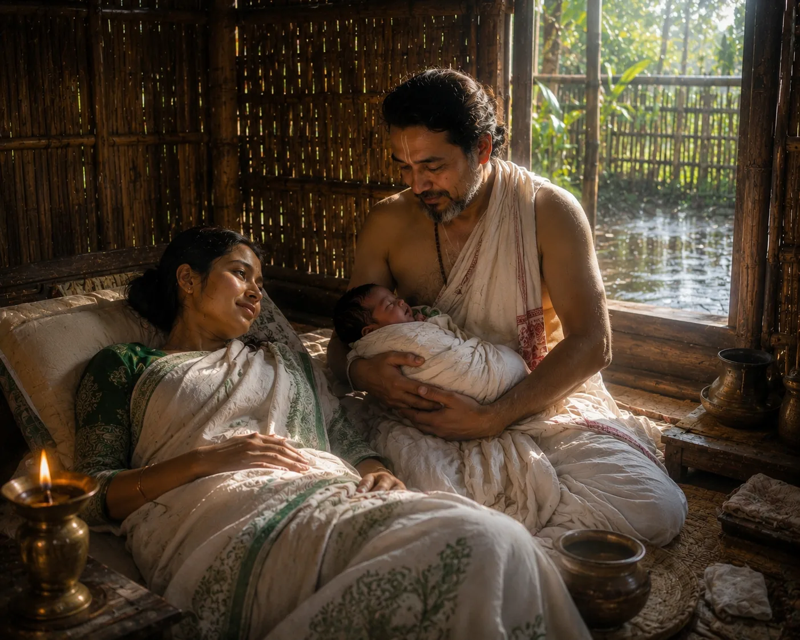

Birth of Prince Sudang in Habung Village
1388 · The coming of Sukaphaa

The banished pregnant queen washes ashore at Habung and is sheltered by a pious Brahmin family; she gives birth to prince Sudang before passing away.
Sources have not yet been catalogued for this record.
People: Sudangphaa (Bamuni Konwar), Tyao Khamti
Open this scene in the interactive archive · Follow this event on MAP